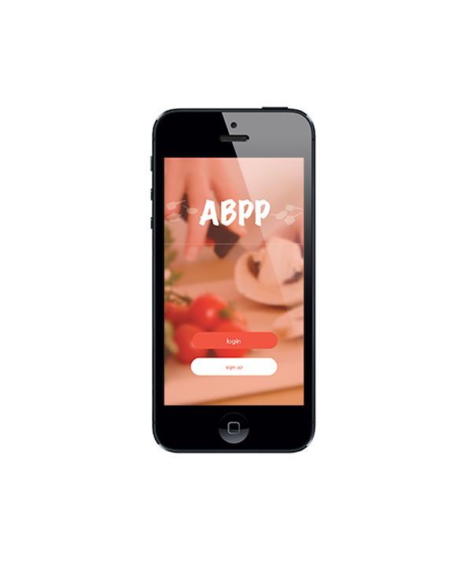

This project was taken from my exchange in germany and I decided to redesign the interface using a web framework. This was to give the application a more neural feel and a non bias towards any particular mobile operating system
The Anything but Pesto Pasta is a concept application designed to help students with what meals they could cook with just the things they have in their cupboards or in the fridge and this application would help them by finding recipes with most of the ingredients they had.
The most noticeable difference to the interface is that it is not longer build with just block colour like the older interface. This re designed version has also had the navigation changed as well moving from an iOS design principal design to a web application design.

Web applicaion design have the menu as a side bar in the top left hand corner of the page. This can be seen in other applications like Youtube.com which the function of the side bar is to show navigational elements such as your youtube profile, subscription and playlists that youve made.
The aim was to create an easy to use interfaces and an experience that felt familiar from start to finish. Whilst the original interface was based around iOS design principals that meant that all of the navigation had to be contained in the bottom half of the screen. Whilst this does make it easy to use this also leaves out the android half of the market so our reach to students was limited.
Changing the type of navigation to web allows the application to stretch its demographic to more users, Since the app is no longer platform specific everyone no matter what device they use will have the same experience. There will be a small learning curve attached the the web app as users get used to the experience but it keeps it mobile platform neutral